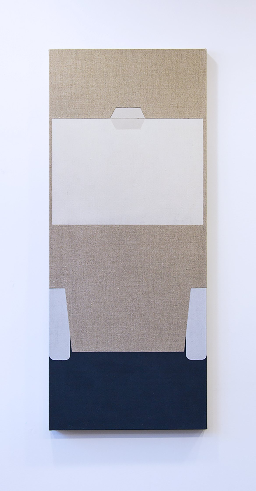
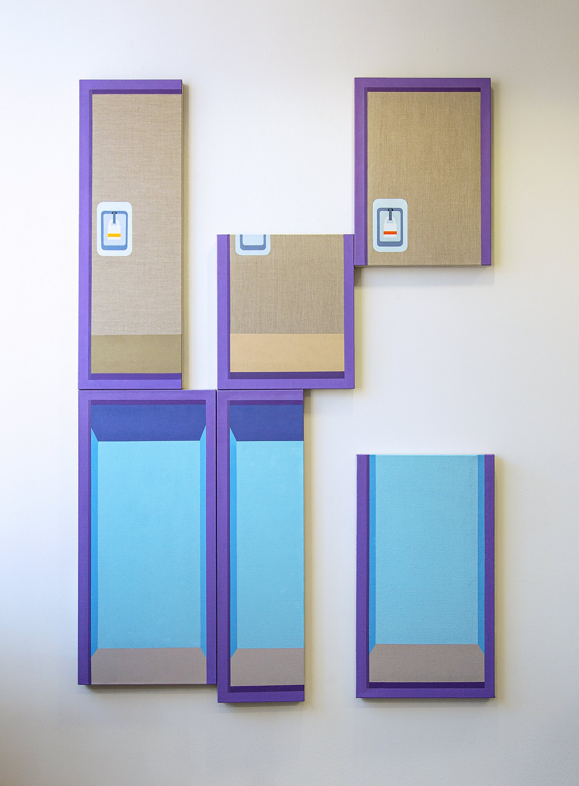
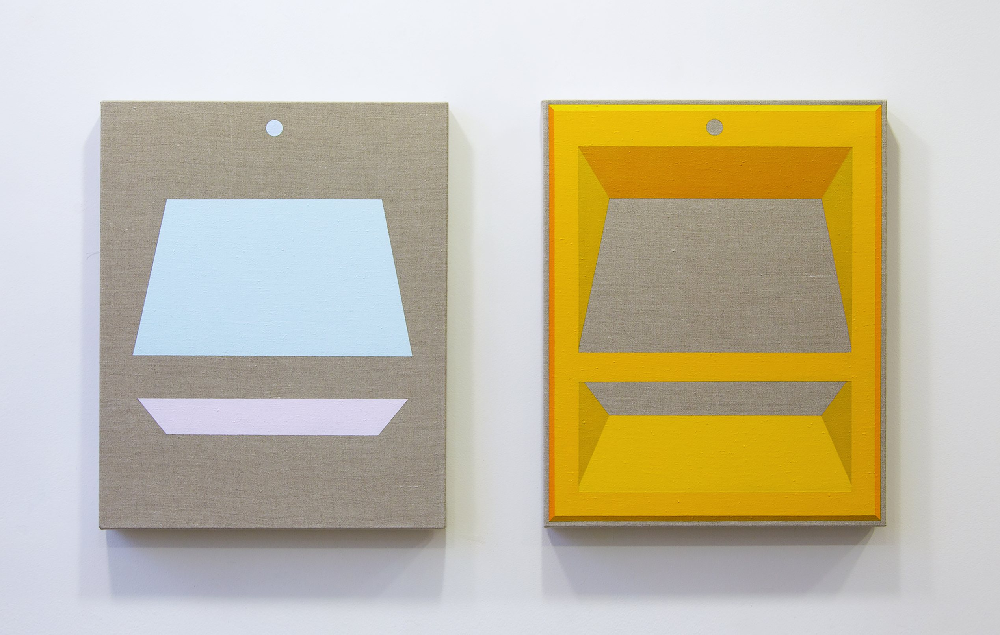
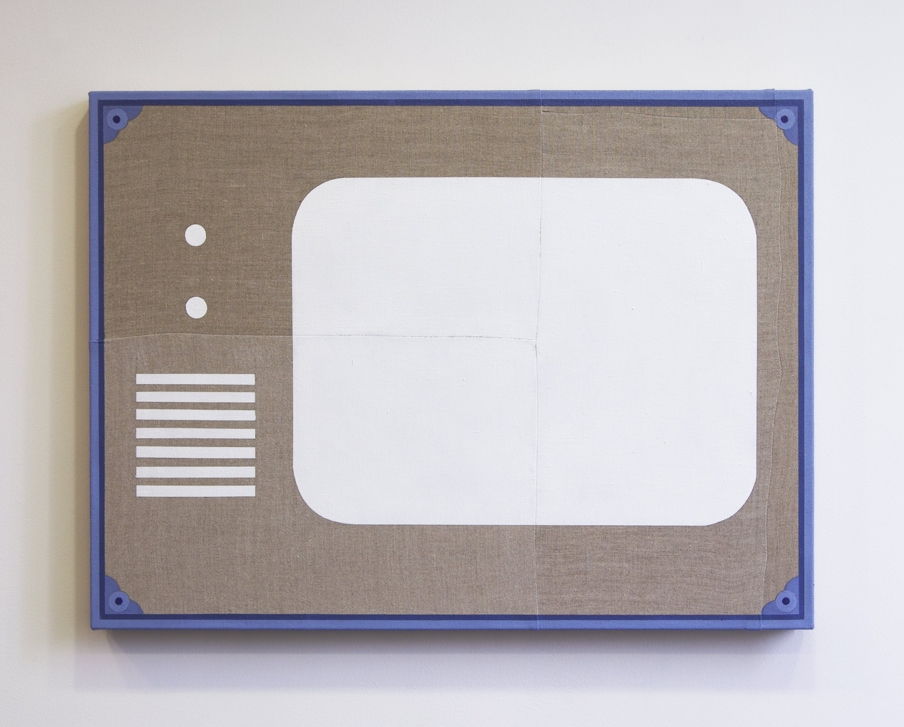
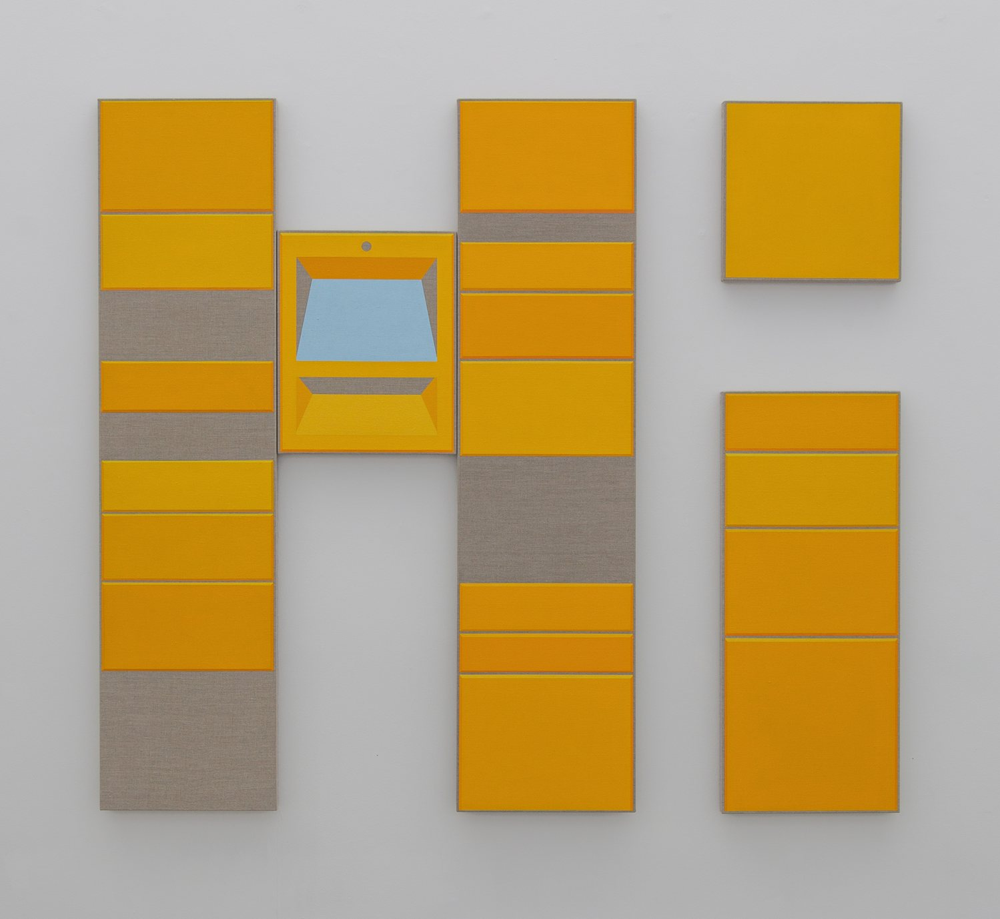
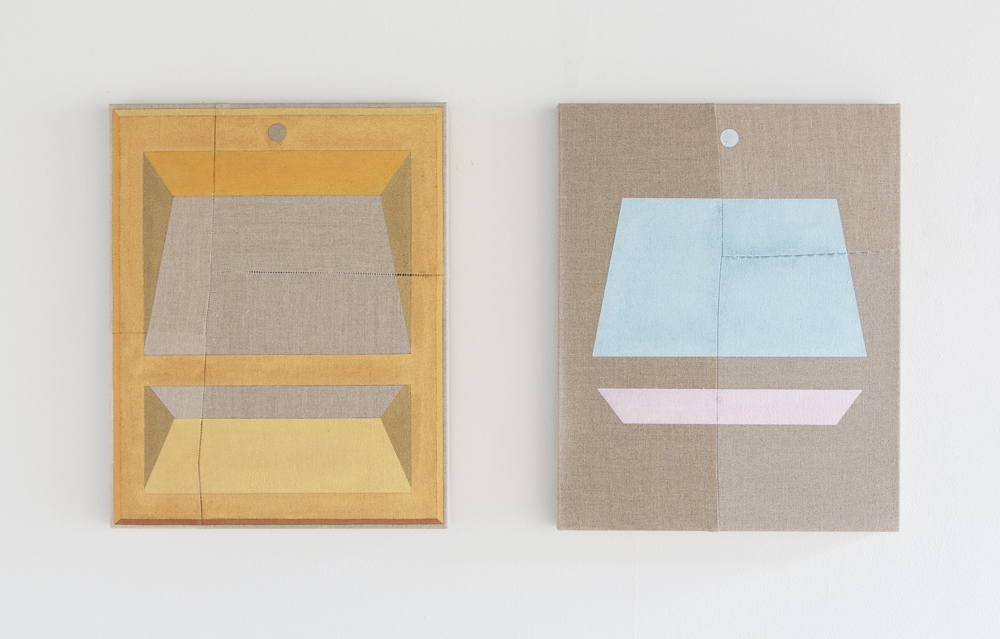
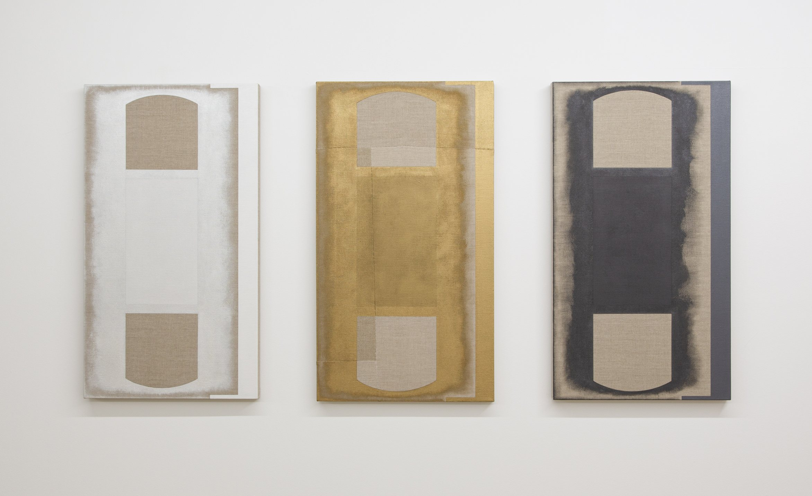

Viva Exhibition
The exhibition
The solo exhibition shows a selection of paintings made as part of his practice-based research at the Royal College of Art.
The paintings

130 × 50 cm · acrylic on linen

180 × 120 cm overall, 6 parts · acrylic on linen
Also shown in the Contemporary British Painting Prize 2022.

50 × 40 cm each, 2 parts · acrylic on linen

55 × 75 cm · acrylic on linen
Also shown in the Contemporary British Painting Prize 2022.

91 × 41 cm each, 3 parts · acrylic on linen

160 × 180 cm overall, 5 parts · acrylic on linen

50 × 40 cm each, 2 parts · acrylic on linen
Also shown in “Hello, World!” (2023).

90 × 50 cm each, 3 parts · acrylic on linen
Also shown in “Hello, World!” (2023).